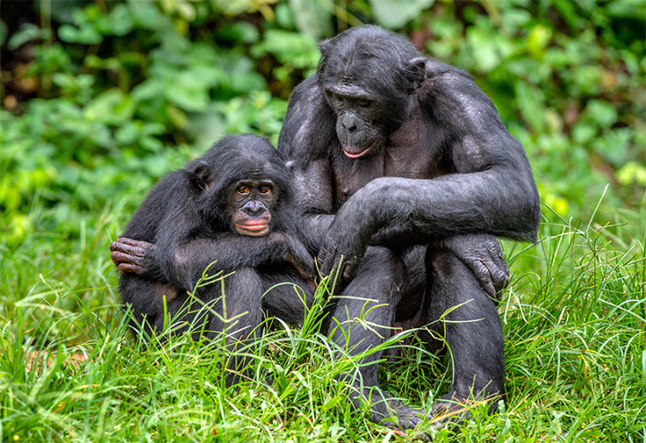
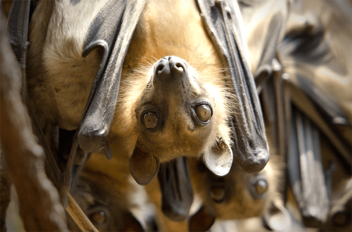

If the eyes are the proverbial window to the soul, language might be the window into the mind. At least that’s what many artificial intelligence researchers and biologists are hoping as they seek to peer into the inner workings of the minds of other animals.
As humans, language is both the way through which we describe our experience and a filter through which we understand that experience, as limiting as it can sometimes be. But we’ve had no such direct line to animals, to ask them about what it’s like to be themselves, about what might be going on in their minds. We’ve been stuck with watching their behavior, and occasionally neurons firing in their brains.
Lately, artificial intelligence has started revealing more information about animal communication that could help us humans better understand the inner lives of other animals. For example, researchers recently used AI to show that sperm whales may have a “phonetic alphabet” from which they construct complex communications and that elephants might address each other by name. AI’s power lies in its ability to recognize, parse, and replicate patterns—and language is nothing if not patterned.
The use of AI to understand animal communication is in its infancy, and results are preliminary. But maybe someday, AI-powered animal communications studies will be able to help scientists understand what every beep from the air and boom from the sea means. Understanding animals’ language may lead toward better understanding them, how their minds tick, and how those minds process their day-to-day life on this planet. And in turn, this line of investigation might also help us better understand the inner-workings of AI itself.
Creating a dictionary of whale sounds might be a hard task, but with AI, researchers think they are making strides. Harder still, though, is understanding the context and nuance of animals’ communication, because both relate to their experience of the world. When is that whale tone intoned? And is it uttered with a sense of urgency or gentle guidance? How is it received and understood by the hearers? In human-English, when someone says, “I’m fine,” for instance, their tone may imply the exact opposite, revealing that the precise meaning of what we say to the outside world is not necessarily a reflection of our inner experience.
AI’s power lies in its ability to recognize, parse, and replicate patterns—and language is nothing if not patterned.
Chris Krupeneye, a cognitive scientist at Johns Hopkins University, acknowledges the challenging difference between an AI decoding a bonobo’s calls and understanding what that ape truly means—at any particular time, in a particular context, in concert with other signals they’re sending. But a sort of machine-powered decoder ring for animal communications signals—even if it’s not nearly that simple—is a solid first step. And once we understand more about animal communication, Krupeneye says, we can go deeper—to explore the ways their brains make sense of their experience. “It could be that there’s some structure to the ways that they communicate that also give us insight into the structure of their thoughts,” he says.
Other scientists are asking similar questions about a variety of other animal species, and they’re using AI to understand non-human minds through language. Take elephants: Researchers, led by Michael Pardo of Colorado State University, used AI to analyze nearly 500 low-pitched, purposeful sounds from elephants in Kenya. The software detected sound patterns that helped it predict which elephant would react to a given set of audio, suggesting it contained a call addressed to them. The model correctly identified the recipient three and a half times more often than what would have happened with random chance, meaning those elephants might aurally recognize themselves, and others, as individuals.
Perhaps the broadest of these research programs is the Earth Species Project, which uses large language models, the same kinds of AI tools that power ChatGPT, applied to animal communications. Earth Species Project scientists hope that such models can ingest communication signals from other species, learn to find patterns and perhaps meaning, and convey that understanding back to humans.

NOW WHAT HAVE WE LEARNED? Bonobos, thoroughly studied for their complex social interactions, may yield insights into their minds if researchers can crack their communication. Photo by Sergey Uryadnikov / Shutterstock.
The group recently released a large audio language AI model, called NatureLM-audio. Relying on what CEO Katie Zacarian—a conservationist and artificial intelligence researcher—calls “universal principles of sound,” it has been trained “across the tree of life.” It was trained on a birdcall database called Xeno-canto, the Watkins Marine Mammal Sound Database, and the broad set of animal sounds that the iNaturalist community has collected, among others. Similar to the way that ChatGPT ingests webpages, social-media posts, and copyrighted writing, using those data to parse and recreate human sentences, logic, and information, NatureLM-audio uses diverse species sounds to understand animal communication better.
NatureLM-audio can’t spit out a translated crow-conversation transcript. But it can tell you if a sound you input comes from, say, crows, how many, what life stage they’re in, and what type of call they’re making. It can also classify or detect thousands of species among animal groups like birds, whales, and frogs. And that’s one (small) step closer toward tapping into animal communication as a way to eventually understanding the minds of other species.
Whether that understanding is actually possible is the subject of the classic 1974 essay in which philosopher Thomas Nagel posed the question, “What is it like to be a bat?” He essentially asked if humans—even if we knew every objective fact about bats, and could imagine their lives—could ever really feel or understand what it was like to be a bat. (The answer was a firm “no.” We have a hard enough time imagining what it might be like to be another person.) Nagel concluded that an animal’s umwelt, its specific experience of the world, informed by its senses and brain, is inaccessible to other animals. Bats and every other species have their own umwelt, and humans—with different sensory experiences of the world (we lack echolocation, for example)—simply can’t imagine what it’s truly like to be a bat or any other creature.
Given that inaccessibility, Zacarian suggests that the Earth Species Project will never spawn a technology that serves as a species-agnostic Rosetta Stone. “This is an assistive tool,” she says. “This is something to extend our understanding, much like the microscope or the telescope. It gives us the ability to sense things that we cannot, to see patterns that we may not perceive.”
Watching the growing excitement in scientific circles and in the media about how AI might be able to decode animals’ signals, neuroecologist Yossi Yovel wasn’t quite sold on the idea. The Tel-Aviv University researcher decided to collaborate with a fellow skeptical researcher at the same institution: Oded Rechavi, who studies worms. Together, they wanted to explore possible challenges in AI-enabled interspecies communication. Yovel and Rechavi coauthored a 2023 paper in which they called those challenges the Dr. Doolittle problem—named after the fictional veterinarian who could understand and speak to animals the way they wanted to be spoken to.
Animals have more complex communication and minds than humans have long given them credit for.
Those obstacles facing a nonfictional Doolittle—even if that person used the power of AI—aren’t minor, Yovel and Rechavi suggested. For one, even AI might ultimately be too human-biased to ferret out the context of animals’ communication, or overcome humans’ own umwelt. Humans, after all, program and train the AI. And both its training data and parameters are based on scientists’ interpretations of the circumstances surrounding a given animal’s chatter.
In Yovel’s own work, he has annotated fruit bats’ squeaks based on the perceived context in which they take place. Then, he used an AI model to analyze those samples and see what was similar and different among them. In the end, he could categorize the communications’ context based on their audio spectrum. But, he writes in the Doolittle paper, “we could only name contexts such as feeding, sleeping, or mating, based on our human-biased perception.” There could be bat-specific contexts we humans know nothing about, and our attempts to understand or communicate with animals will necessarily be limited: “If animals do not communicate about something, we will never be able to communicate with them about that thing,” Yovel says. Soccer practice, for instance, is probably our province alone. And we, similarly, lack innumerable contexts for important topics in their worlds.
Further complicating these attempts is the fact that animal communications don’t always come in forms we recognize. “If the animal is communicating through odors that we can't smell or sounds that we cannot hear or electromagnetic signals that we cannot sense, then we’re completely blind to the communication,” Yovel says.
And often, they’re probably using multiple comms channels at once. Even humans communicating with each other show faces twitching with microexpressions, postures shifting subtly. Maybe a worm secretes a smelly chemical and shifts its tail five degrees to mean “go away.” But if an AI translation system is watching only its movement, and scientists didn’t tell that system to also seek out associated smells, they’ll miss the full message.
All of this work, and its difficulty, reinforces the idea that animals have more complex communication and minds than humans have long given them credit for. As work to understand that complexity progresses, thanks in part to AI, York University philosopher Kristin Andrews thinks it could help researchers get a better grasp on AI itself. Researching other animals’ minds, she believes, could help computer scientists determine whether an AI is sentient.
Sentience refers to an animal’s capacity to feel and respond to its external environment—to experience, care about, and respond to sensations, having preferences about them. (Consciousness, meanwhile, also includes the ability to, say, hold beliefs in your head, and have a subjective experience of the world.) Whether, and how, other animals are sentient or conscious or both is the subject of current debate and ongoing study.

NOT TALKING SOCCER PRACTICE: Animals like bats may communicate about experiences common to them but utterly inaccessible to humans. Photo by Jenny_Vi / Shutterstock.
One way scientists investigate animals’ potential sentience is using behavioral and physiological responses they can observe. For example, hermit crabs respond to stimuli they don’t like—such as electric shocks and the presence of predators—with more than just reflex, enduring shocks to avoid predators, and thus making a choice-based tradeoff. “We can make an inference that the best explanation for why they act in all these ways is that they actually do feel something, do care about something,” explains Andrews.
Using similar markers to assess AI’s hypothetical sentience won’t necessarily work, of course, because it doesn’t have a physical experience of the world. It can also learn how to imitate pain or preferences, which presents an extra wrinkle. As Andrews notes in a 2023 Aeon essay she coauthored with philosopher Jonathan Birch, large language models might “learn” to do this by ingesting the text of their very essay suggesting they might ingest the text of the essay to learn to imitate markers of sentience, such as pain. “It’s like thinking that we actually are able to judge a student’s knowledge in math if they were given all the answers before the test,” she says.
Andrews says she does believe that studying animal minds could lead to novel tests of sentience. For instance, AI that replicates the form of an animal brain in simulated digital neurons wouldn’t be subject to the same loopholes. It’s a computational emulation of a being’s brain, and not a language model imitating one. If that brain’s activity showed pain markers, she says, it could mean that the AI was in fact feeling pain. But mimicking in silico the synapses of any living thing is a tall order. In 2014, researchers with the OpenWorm project created such a digitalmodel of the world’s smallest brain—that of a nematode, which has just about 300 neurons—and used that brain’s activity to propel a Lego robot forward. Scaling up to more complicated brains is a computational nightmare, and scientists and philosophers still debate whether something that doesn’t have a physical experience of the world, such as an LLM, and isn’t embodied as we are, can be conscious or sentient at all and possess its own umwelt.
Once we can talk with animals—or perhaps embodied AI—like Dr. Doolittle, will we confirm that the complexities of our experiences aren’t so different after all? “I always found that Nagel was exaggerating differences to the neglect of similarities,” says Andrews. Sure, we’re not the same as bats, but we’re also not the same as each other. “There’s a lot more differences than I think philosophers used to acknowledge: cognitive diversity, cultural diversity, gender diversity,” Andrews explains. “Yet we do an okay job communicating,” she continues. “And so I think that we’ll do an okay job communicating across species.”
Efforts like the Earth Species Project might not ultimately succeed at decoding and understanding animal minds, but Zacarian says that’s not actually her ultimate goal. Instead, she hopes to extend human understanding of these similarities and differences with the other animals around us. That knowledge could better connect humans with other parts of the communicating world. And a new appreciation of non-human complexity. 
Lead image by Tasnuva Elahi; with images by Nuwat Phansuwan and Alexander Supertramp / Shutterstock